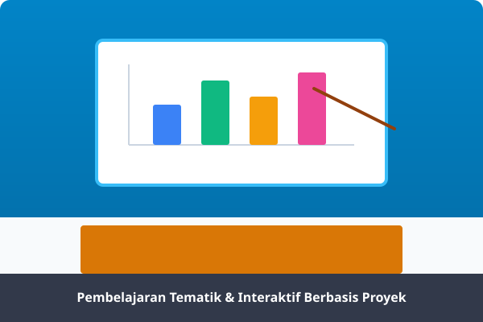
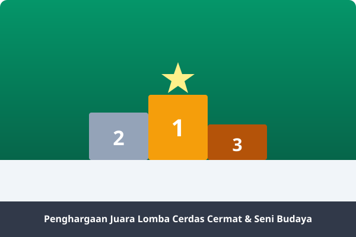

Dokumentasi & Galeri Kegiatan
Potret kebersamaan, semangat belajar, aktivitas ekstrakurikuler, dan momen bersejarah keluarga besar SDN 057237 Bukit Selamat.




* Klik pada gambar mana saja untuk memperbesar foto dalam tampilan Lightbox.